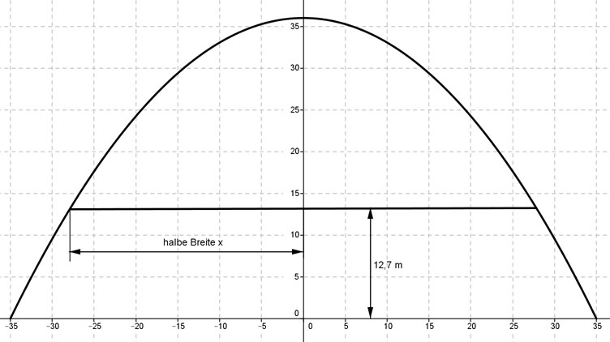

Aufgabe 136 Ein 36 m hohes Gebäude hat, von vorne betrachtet, ein parabelförmiges Dach, das bis zum Boden reicht und dort 70 m breit ist. Wie breit ist ein Zwischenstockwerk in einer Höhe von 12,7 m?  Ermittlung der Funktionsgleichung: Die Parabel ist symmetrisch zur y-Achse, deswegen ist es eine der Form y = ax2 + b. b ist der Schnittpunkt mit der y-Achse, hier b = 36. Eine Punktkoordinate abgelesen: P(35|0) Eingesetzt: 0 = a * 35² + 36 | -36 -36 = a * 1 225 |:1225 a = -0,0294 y = - 0,0294x2 + 36 Für y = 12,7 eingesetzt: 12,7 = -0,0294x2 + 36 |-36 -23,3 = -0,0294x2 |:(-0,0294) x2 = 792,5 |√ x = ± 28,15 m Gesamtbreite = 2 * 28,15 m = 56,3 m